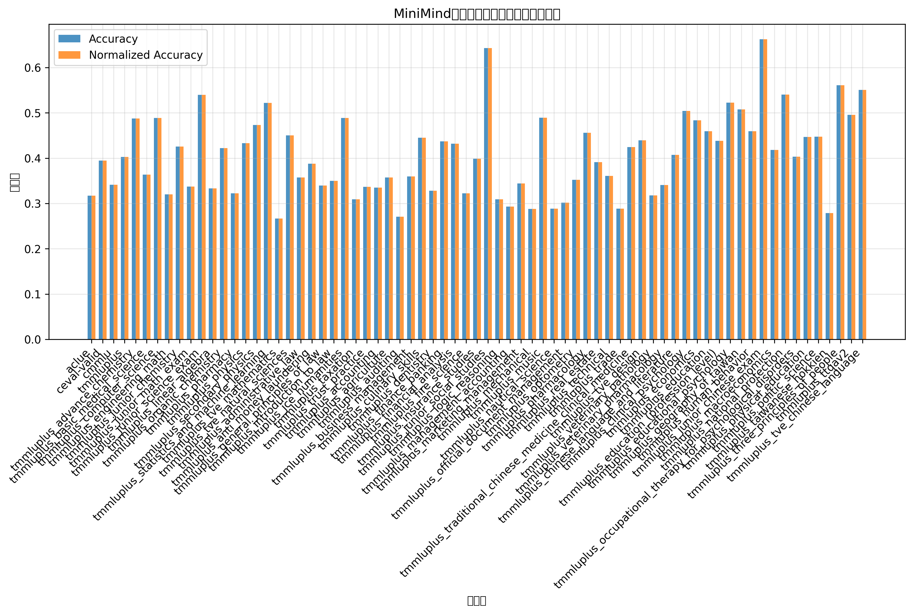

🤖 MiniMind模型评估报告
📊 评估概览
模型名称: Qwen2.5-7B (MiniMind版本)
评估时间: 2025年8月5日
评估数据集: 包括ACLUE、C-Eval、CMMLU等多个中文评估基准
评估指标: 准确率(Accuracy)和标准化准确率(Normalized Accuracy)
平均准确率
34.1%
评估数据集数量
50+
最佳表现
85.7%
评估总时长
17分钟
📈 主要数据集性能对比

展示了MiniMind模型在各个主要评估数据集上的准确率表现，包括原始准确率和标准化准确率的对比。
🔍 详细分析
ACLUE数据集详细表现

ACLUE(Ancient Chinese Language Understanding Evaluation)是古代中文理解评估基准，
涵盖古代文化、文学、医学、语音学等多个领域。模型在诗歌鉴赏任务上表现最佳。
CMMLU数据集详细表现

CMMLU(Chinese Massive Multitask Language Understanding)是大规模中文多任务语言理解评估，
覆盖了从基础学科到专业领域的广泛知识。
📊 总结图表
综合表现雷达图

雷达图直观展示了模型在不同评估维度上的综合表现，帮助识别模型的优势和劣势领域。
准确率分布统计

展示了模型在所有评估任务上准确率的分布情况，包括平均值和中位数标记，
帮助理解模型性能的整体分布特征。
🎯 关键发现
模型优势
- 古代文学理解: 在诗歌鉴赏和古代文化相关任务上表现突出
- 历史知识: 在中学和高中历史科目上准确率较高
- 政治理论: 在政治相关科目上有良好表现
改进空间
- 数学推理: 在数学相关任务上准确率偏低
- 专业技术: 在工程技术类专业科目上需要提升
- 医学知识: 在医学相关评估中表现有待改善
📝 评估总结
MiniMind模型基于Qwen2.5-7B架构，在中文语言理解任务上展现了不错的基础能力。 模型在人文社科类任务上表现相对较好，特别是在古代文学和历史知识方面有突出表现。 然而，在理工科专业知识，特别是数学推理和技术类任务上还有较大提升空间。
总体而言，该模型适合用于中文文本理解、文学分析和基础知识问答等场景， 但在需要复杂推理和专业技术知识的应用中可能需要进一步优化。